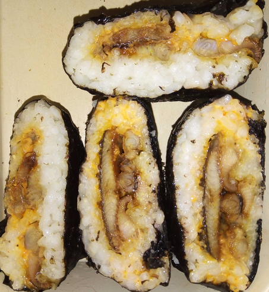

Today, in my ongoing attempt at mastering onigirazu, coupled by my ongoing attempt at mastering Unagi Kobayashi, I combined both. The concept of onigirazu is fairly simple: one only has to cook rice the way you would cook it for onigiris (minus the surplus of salt), or for sushis (minus the rice vinegar), place a square of nori algae, make a square of rice in the middle (leave a large margin on all sides), place some ingredient on top, a sauce (personnally I like adding some sriracha mayo), some more rice, and then fold the nori algae around the ingredients like some kind of gift wrap. Then put it in a box or wrap it in foil and place in the fridge overnight, the next day slice in half, and voilà: a rice sandwich!
So my main filling today was eel. I defrosted one yesterday, took the head and tail off and sliced it in flat squares. Separately I reduced on the stove a mixture of soy sauce, mirin, sugar and broth (normally fish broth but yesterday I only had beef broth) until it thickens. Then I placed the eel skin-side on aluminium foil in the oven and brushed some of the sauce on both side. Every 5~10min i would open the oven to brush some of the sauce on top of the eel again. The whole process lasted ca. 40min (I flipped the eel 10min before the end). Naturally, proper Unagi Kobayashi is made on a barbecue, but, well, it's winter and I live in a flat.
In the past, I made onigirazus with salmon teriyaki, with cucumbers, beetroots, etc. People also make them with spam. It's a very versatile dish.